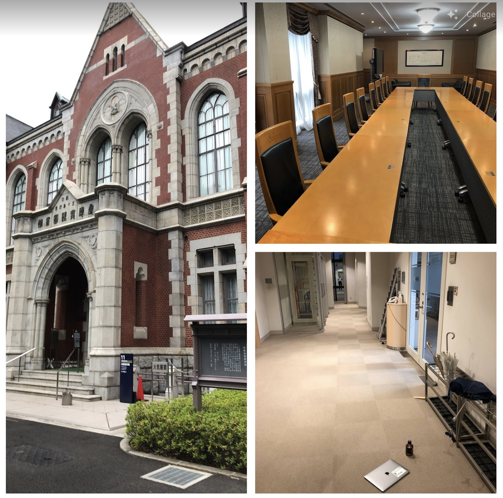
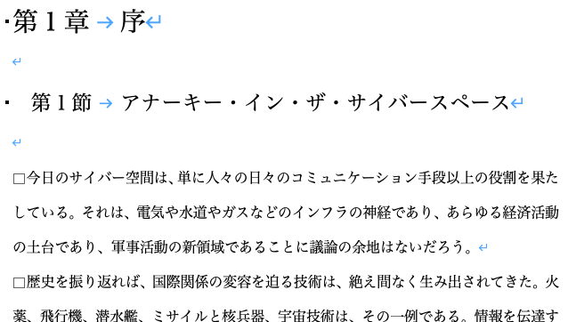
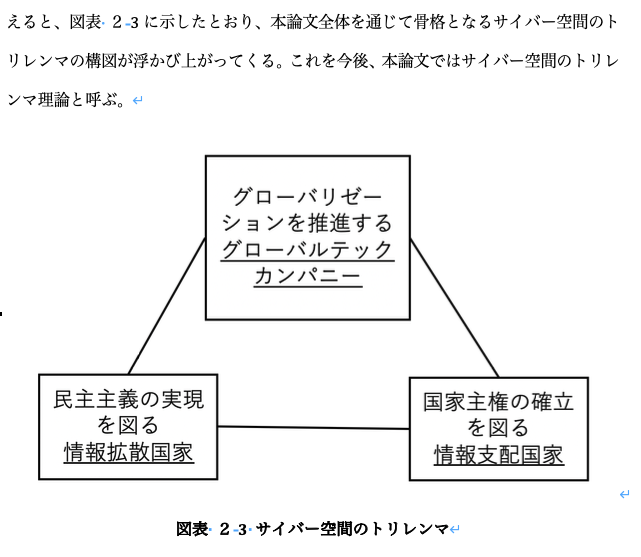
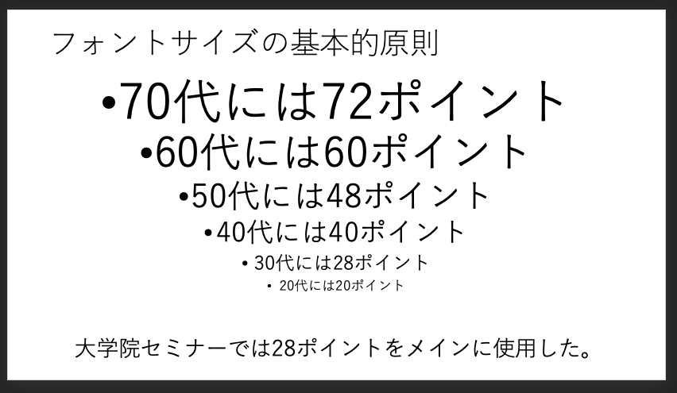
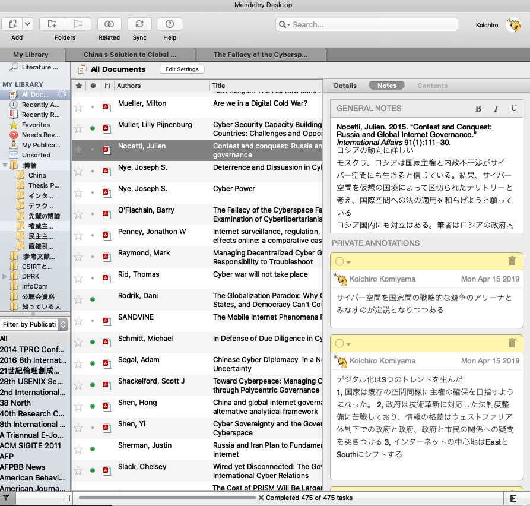
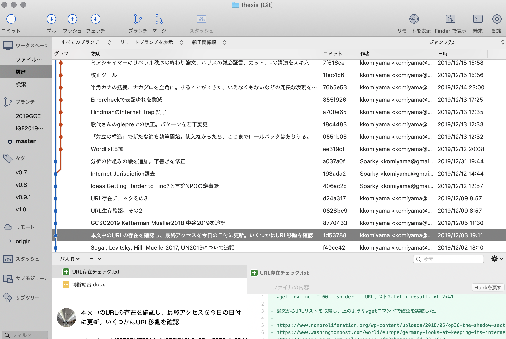
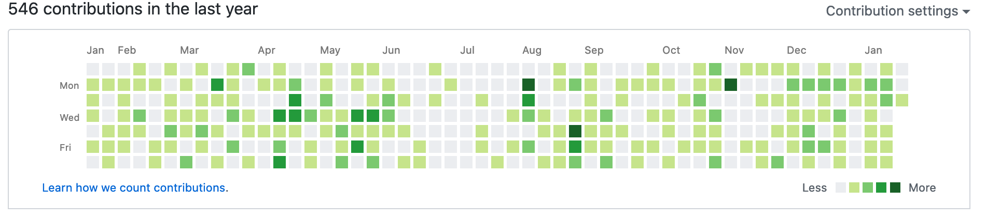
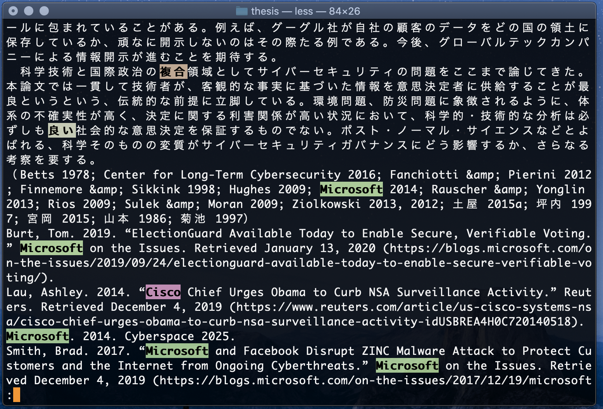

土屋研で博士号を取らんとする方への申し送り事項
小宮山功一朗
はじめに
2020年7月31日にめでたく博士の学位を授与された。学位取得に6年3ヶ月を要したことから分かるとおり、私はできの良い学生ではなかった。大いに迷った。後期博士課程(以後、博士課程)は大学によって基準が異なり、同じ慶應の中でも研究科によって違い、同じ研究科の中でさえプログラムによって雰囲気が異なる。検索エンジンから得られる情報は迷いを解消してくれなかった。そんな時に、土屋先生だけでなく、1つ上の菊地さんや2つ上の北川さんにメールで色々聞いた。後輩の花房さんにもいろいろ添削してもらった。その作業無しに博士号をとることは不可能だった。
この文書は、共に土屋先生の下で学ぶ博士課程の学生のみなさんを対象に、私自身の経験と私が直接先生や先輩達から聞いたことをできるだけまとめて提供することを目的としている。間違いも、過不足もあると思うが、そこは皆さんが学位を取得された際に、加筆修正してくれることを期待している。本文中、緑の文字の部分は2019年に学位をとられた菊地映輝さんによるものである。
文書の性質上、共有は土屋研関係者に留めていただきたい。世間一般向けのアドバイスは自分のブログに書いた。
文書の構成は次のとおりである。まず「学位取得への流れ」の項で、入学後から学位取得までの流れに沿って、注意事項をまとめる。次に「論文執筆の注意事項」では査読論文、博論、発表資料(スライド)を執筆した際に学んだことをまとめる。最後に「執筆環境の推奨事項」の項では執筆にあたり、あると好ましいPCの環境についてまとめる。
学位取得への流れ
本項では、まず博士課程での全体的な注意事項を列挙し、その後大学院ガイドに掲載される、学位取得への流れについてそれぞれ注意点や経験を記す。
全体を通じた注意事項
- 博士課程は主査が重要というのはよく聞く話である。入学前はその意味がいまいち分かっていなかったが、終わってみてそれは事実である。先生とのコミュニケーションにおいて、私が気をつけていたことをいくつか。
- 土屋先生は、特に指導している学生に対して、礼儀作法的なものを求めていない。コミュニケーションにおいては、丁寧さを犠牲にしても、早く返信することを心がけた。つまり何かを頼まれて、それに応えられない場合、1日かけて丁寧なお断りメールを書くよりも。2分で「すいません。無理です。」と返信したほうが、先生も助かるはずである。
- 先生は時間に正確である。大抵30分前には集合場所に到着している。ジャイアンツと土屋研は30分前行動と覚えておきたい。
- 研究に進展がなく、先生からのメールを開きたくない時期もあるかもしれない。正直、私はあった。そういうときは「全然書けてません。」とだけ返信してもいい。先生は研究の進捗もそうだが、元気に過ごしているかも気にかけている。返事がないのが、一番困るはずである。とにかく何か返事しよう。
- そんなくだらないことを聞いてくるなと咎められたこともないので、深く悩むくらいなら先生に相談しよう。
- 副査の先生方も、土屋先生とは異なる学生指導のスタイルがある。なるべく早くそのスタイルを掴むこと。大学院セミナーの前に、副査の先生とどこまで事前に調整するかなどは、最後まで見極めが難しかった。ただ社会にいまだ存在する「大事な要件をメールで済ませるな」というタイプは、SFCでは遭遇しなかった。
- 主査と副査で指導方針が割れることがあるが、最も従うべきは主査。SFC内のフォーマルや公聴会、最終投票などは教員同士のパワーバランスに依存するときも多いが、自分を最後まで守ってくれるのは主査。
- 学費納入、履修登録、博士課程修了要件に関する申請書、研究費の精算書類など学生が行う手続きは締め切り厳守で終わらせる。大学院ガイドの「第5章 後期博士学位取得のプロセス」の部分だけを印刷して手元に置いておくとよい。これが、大学院生活の法であり、遵法は院生の義務である。
- 履修登録を忘れると、藤沢の窓口に出向かなくてはならなくなる。
- 博士課程修了要件に関する申請書を忘れると、次の学期で大学院セミナーができなくなる。
- 学生証をなくすと藤沢に行き、再発行手数料2000円を払うことになる。
- 手続き面は、大学院学事担当(g-staff@sfc.keio.ac.jp)が一番くわしい。メールのレスは早いし、電話しても親切に教えてくれる。話し方で、いい年の大人の雰囲気を出すとよいかもしれない。菊地も在学中に何度も電話した。少しでも気になることは電話すべし。
- 研究費(大学院プログラム費)は学事担当ではなく、管財担当になる。
- 大学院セミナーは研究室のチームワークが必要である。
- 自分が研究発表をする場合、少なくとも30分前に会場入りし、教室でのスライドの投影テストをしておくこと。毎度毎度トラブっている人をみる。
- 事前に土屋研の他のメンバーにお願いして、資料の配布、質疑のメモ取り、写真の撮影、機材トラブル時の協力などをお願いしてよい。
- 自分が頼まれたら、できる範囲で協力してあげよう。
- 単位取得退学のタイミングで、学費を払う必要がなくなる。一方で色々不便なことをもある。個人的には大学院のプリンターと図書館やオンラインライブラリが使えなくなったこと、Eduroamが使えなくなったことに不便を感じた。予め心の準備をしておいてほしい。
- 単位取得退学するときは、土屋先生に頼んでSFC研究所の所員（6万円程度実費）にしてもらうと、メディアセンターやたしかエディロームも使えたはず。
- 私が入学した当時の研究科委員長徳田先生曰く、SFCで社会人ドクターを1.5年で終えた人がいるそうである。理論上、3年以内に終えることは可能なので、3年で終わらすという強い気持ちを持ち続けてほしい。
リサーチプログレス (旧インフォーマル)
- 使用した資料はこちら。大学院入学時に作った研究計画書に手を加えたもの。
- GRの先生たちへの自己紹介のつもりでのぞんだ。合否がつかないが、初対面の印象は後々響く。事前に院ゼミなどで発表し、先生にきっちり直してもらう。
- 大学院での実質最初の発表となるため、「発表が研究発表の体を成していない。これはレポートであって研究ではない」と切り捨てられるケースを複数回見た。特に社会人で博士課程に入ってきた人が、自信満々に自分の知識を披露した場合に起こりがち。該当者は注意されたし。対策は、他人の研究発表を良いのも悪いのも多く聞くこと。
- GRの大学院セミナーはスーツ着用者が多い印象がある。固めの服装が無難である。
査読論文執筆
私の博士課程在籍が長かった原因は、思うように論文を書けなかったからである。きつかった。具体的な注意事項は「論文執筆の注意事項」の項を参照されたい。
シーシスプロポーザル (旧フォーマル)
- 使用したスライドはこちら、提出した研究プロポーザルはこちら。同じく、菊地さんのスライドとプロポーザル。
- 私は査読論文2本通ることが決まったタイミングで実施したが、1本は出版され、1本は投稿して査読中というタイミングでのフォーマルも見たことあり。
- 準備が重要。本番2週間前くらいに副査の先生2人に当日使う資料を用いて説明した。
- 無事合格すると、いよいよ博論執筆が本格化する。
博論執筆
私は、ページ数の制約がなく、好きに書ける博論執筆は博士課程で一番楽しかった。しかし、初稿を書き上げてからが大変である。詳しくは「博論執筆の注意事項」の項を参照されたい。
学位審査委員会設置
- 全ての博士要件を満たし、博論が完成度9割に達する頃に、先生が副査の先生達と調整して学位審査委員会が立ち上げられる。学位審査委員会は発足後1年で学位が認められなければ解散となる。泣いても笑ってもここから1年で全てが完結する、そういうタイミングである。
- 学位審査委員会設置のタイミングが最も紙を印刷するなどの事務作業が多い。時間に余裕をもって作業にはいること。分からないことは学事担当にどんどん聞くこと。
- どれだけ事前に確認しても、窓口で修正を求められるかもしれない。窓口には締切の前日までに行くのがよい。
- 参考論文の綴は以下の画像のようにバインダーに挟んで、目印をつける。
- 学位審査委員会設置に必要な書類は窓口提出が基本になる。その時に単位取得退学していると、一箇所でも間違いがあると、キャンパス内のコンビニのプリンタで印刷するなどの費用が発生する。
- 博論のタイトルはこの段階で決まる。変更は基本不可能である。慎重に決めること。
公聴会
- 使用した資料はこちら。菊地さんの資料はこちら。
- 他の大学院では、公聴会をするときには、その夜の祝賀会を同時に準備する慣例があるなど、公聴会開催イコール学位授与が決定している状態であることがある。しかしSFCでは不合格もある。私は合格したものの、予定していた最終試験の延期が決まり、過去には不合格でやり直しになった土屋研の先輩がいる。そういう覚悟で臨むこと。
- 私の場合、公聴会で主査・副査以外に2名の先生からコメントをもらい、個別にアポをとり、コメントの真意と修正の方向性を相談した。具体的にこのようなコメントをいただいた。先生方のコメントが全く異なる方向を指し示している場合、修正する前に主査に相談しよう。
- フォーマルや公聴会では主査は発言権はないので、副査の先生たちに自分の研究を理解してもらい援護射撃してもらう必要がある。僕より上の先輩は、副査に事前に質問をしてもらったことを、公聴会で再び聞いてもらっていた（プロレスみたい）。
最終試験
- 使用した資料はこちら。
- 主査と副査3名と自分だけの密室で行われる口頭試問である。
- 30分ほど発表をして、主に副査の先生からの質問に答える。SFCにおいては公聴会をDefenseと呼んでいるが、人によっては最終試験のほうが厳しいDefenseとなるらしい。
- ここまで来て落ちることは無いと思うと、大間違いで、過去には最終試験の延長戦を行った土屋研の先輩がいる。『菊地は最終試験で一度落とされて、二度目の最終試験でも副査に怒られたが、号泣したら許してくれた。』 繰り返しになるが、そういう覚悟で臨むこと。きちんと副査の先生とコミュニケーションをとり、指摘事項を直していくことが重要。
- そのためには、指摘内容をメモして、「ご指摘どおり、ここをこのように修正しました。」ときっちり提示する。
- 
- ある先生から『研究が完璧であると装う必要はありません。「守らなければならないもの」と、審査にあまり影響しない「守らなくてもよいもの」をしっかり見極め、後者に関して変に反論しようとしないことが重要です。』という趣旨のアドバイスをもらった。そのとおりに行動することを心がけた。
- コロナ対策でマスク着用のまま30分プレゼンしたら、軽い酸欠状態になった。気をつけよう。
- フォーマルや公聴会では立ちながらのプレゼンが基本だが、座っていいですかと確認して座りながら発表することも出来るのであわせて使いたいテクニック。
博論の製本
- 最終試験に合格し、先生からOKが出たら、大学図書館に収蔵してもらうハードカバー製本の博論を一冊作る。私は大岡山のLBSという会社に中1日の納期で発注。納期が短いため15000円くらいかかる。この会社は最短半日で印刷製本してくれる。博論の修正はギリギリまで行われるので、このくらいの出費は今から想定しておく。
- これを大学に収めた時点で、学生の作業は終わる。残るは研究科委員会での投票だが、当然、学生は参加できない。人事を尽くして天命を待つ。私の博論の最終バージョンはこちら。
論文執筆の注意事項
本項では論文執筆時の全般的注意事項、体裁の注意点、実際に私が指摘された点を解説していく。その後、特に博論と大学院セミナーなどで使用する発表資料の執筆/作成時の注意点をまとめる。
論文執筆時の全般的な注意事項は以下のとおりである。なお、大昔の土屋研の卒業生が作った土屋研論文執筆要綱という文章も残されている。書いたのは土屋先生ではないそうであるが、とても参考になる。
- 題と副題は究極のサマリー。興味を引くものを考える。できるだけ句読点はいれない。新聞記事のタイトルの様な柔らかさはいらない。論文らしく固く書く。
- 分析の枠組みで、既存の学問の体系のどこに貢献しようとしているのかを明らかにし、各章の内容を概説する。
- 「で、結局何が言いたいの?」と突っ込まれることは多い。結論を先に書くことが望ましい。
- 「おわりに」「まとめ」の章の中に節を作らずに、一息で書く。
- 博士課程までくると、捏造、改ざん、盗用などの研究不正を見破るのは指導教員であっても容易でないはず。現実に、私が大学院在籍中も学位取り消しに至る剽窃が発覚した。査読論文であれば、それを受理した学会や査読者に、博論であれば主査や副査や大学に大きな損害を与えることを自覚して、襟を正して研究するしかない。
- 書けたら、誰かに読んでもらおう。自分の研究テーマに詳しい人よりも、畑違いだが研究や論文の作法がしっかり身についている人のコメントに学ぶことが多かった。
- 投稿前に、必ず印刷して赤入れをする。印刷しないと気づけないエラーがある。
- 論文の書き方を解説する本は、巷に溢れている。いくつか読んだ上で、私の一番のおすすめは一橋大学田中拓道先生のWebサイトである。リンク先は論文の書き方の解説だが、それ以外にも文系の研究者向けのわかりやすい解説が多い。特に私が苦労した、分析の枠組みという考え方についての記述が参考になった。次点は北大の鈴木一人先生の論文作成ガイドブックその1、その2である。各自、自分の研究分野に近い人のアドバイスを探してほしい。
- その上で、査読を通すには、どのジャーナルに投稿するかが一番重要である。どのジャーナルが通りやすそうか(投稿が少なそうか)というインテリジェンスが有ると有利。土屋先生やその分野の先輩研究者に聞くとアドバイスが貰えるかもしれない。
- 査読期間は通常1-2ヶ月かかる。あまりに時間がかかるようであれば、自分が博士課程に所属し、投稿した論文の採否が早く知りたいということを、丁重に伝えてみよう。
- 査読の結果は、①そのまま再録、②条件付き採録、③再提出再審査、④不採録などとわかれる。「そのまま採録」は非常にレアなので、条件付き採録という結果が出たらよろこんでよい。査読結果が送られてくる。後々、本当に査読が行われたかの確認などで、照会を受ける可能性がある。査読結果は保管しておくこと。
- 査読者からのコメントには、真摯に素早く対応すること。査読者と戦ってはいけない。時に「よく読んでください、ちゃんと書いてます。」と言いたくなるようなコメントがつくこともあるが、査読者に意図を伝えられなかった自分の力不足を謙虚に受け止めよう。分かりやすい表現に直すなどの工夫をする。修正原稿を編集部に返送する際は、変更点をひとまとめにした別資料を添える。査読結果報告とそれに基づいて修正した際の送り状。
- (査読期間は)分野によってはもっとかかる。なので査読がどれくらいかかるのか（雑誌の出版月日から逆算して考える）を計算しながら査読は通していきたい。
- 研究の仕方がわからないから、博士課程に所属しているのであって、先生や周囲からのコメントに恐縮する必要はない。ただ同じ指摘を何度も受けることがないように気をつけたい。
体裁
論文執筆の体裁に関わる注意点は以下のとおりである。ただしジャーナル毎に投稿規定という名の、定められた書式があるのでそれに従う。投稿規定で不明瞭な点は、そのジャーナルで既に公開されている論文を見て、それに倣う。先生からの指示、世間の常識とかけ離れても、基本的に投稿規定が優先される。
- 本文フォントはMS明朝(等幅)10.5ptを使う。英語はCenturyが基本。ただし脚注は9ポイントなど多少字を小さく。
- ページサイズはA4で、余白はやや狭めに設定することを推奨。
- Wordの設定を変更し、スペースや改行などの編集記号が表示されるようにする。以下の図はMacの設定画面なので、Windowsでは多少異なる。
- 段落は全角スペースをつかって1マスあけて書き出す。
- 
- Wordの機能で段落毎の字下げができるが、それを使わずあえて全角スペースを入れる。画面上では字下げされているのに印刷するとおかしいときがあるため。
- 土屋先生からは後々出版するときにも自分でスペース入れてた方が楽って聞きました。
- 丸括弧は全角の（）を用いる。
- 和文中は全角、英文中は半角。
- 他の記号「:」なども同じである。
- 「」(括弧)と・(ナカグロ)は半角カナにも同型の文字があり注意する。
- 数字とアルファベットは半角文字を使用する。
- 半角カナや機種依存文字は使わない。以下は機種依存文字の代表格。
- 数字記号の表記を統一する。位取り(1000なのか、1,000なのか、一千なのか)、単位揃え(1.1なのか、1.100なのか)を文章内で統一する。
- 注は句読点の直前につける
- 2017年3月に発足し、2つの規範を公開した(*1)。
- 図表番号は必ず振り、タイトルをつける。図表を使った場合、本文中で説明をする。本文で触れられない「迷子図表」は避ける。
- 
- 図と表でそれぞれ分けるのが丁寧だが、まとめて図表でも特に問題ない模様。
- 図のタイトルは下に、表のタイトルは上に書くのが原則である。
- 初出の略語はフルスペルを添える。
- 政府はODA(Official Develpment Assistance)の拠出を決めた。
- ページ番号を下の中央に振る。右下に置いてしまうと、製本などの際にやり直しが生じる。
- 脚注は投稿規定に沿ってフォーマットする。特に脚注番号の表記に細かい指定がある場合がある。脚注も文なのでピリオドか読点で終わる。
- 査読者の中には、まず参考文献を読んで、読むに値するか否かを判断する人もいるらしい。とにかく1つの論文の中で統一されていることが重要。
- 例: Michael Jordan (2018) "How I make it," Springer.
- 例: 加藤朗. 2015. “サイバー空間の安全保障戦略.” 戦略研究 15: 3–24.
- 査読論文や学術書以外の場合、引用する文献の性質には注意すること。Sputnik(ロシアの情報操作活動の一翼を担うとの噂あり。)を引用していることを注意されたことあり。
- 句点は特に忘れがちなので、最後に確認する。
- 査読論文の場合、受理された後に体裁は編集者によって修正が入る。細かい見栄えは考えなくてよい。
- 引用部分以外で?や!は使わない。
- 投稿前に、もう一度「エラー! 参照元が見つかりません。」というWordの参照エラーが起きていないか確認する。
間違えやすい表現
以下は、実際に土屋先生から指摘を受けて直したもののリストである。
| 正 |
誤 |
| 『この中で「他国のCSIRTにはA。自国のCSIRTにはB」という項目が』 |
『この中で「他国のCSIRTにはA。自国のCSIRTにはB」という項目が。』 |
| 第2章では |
2章では |
| 描く |
えがく |
| 述べた |
のべた |
| とおり |
通り |
| 行われたと見られる |
おこなわれたとみられる |
| 挙げられる |
あげられる |
| オラスコム（Orascom）社 |
オラスコム社（Orascom） |
| 魔法の兵器(Magic Weapon) |
Magic Weapon（魔法の兵器) |
| 「パノプティコンの高度な現代版ではないかという疑い」（神里2015: 29） |
「パノプティコンの高度な現代版ではないかという疑い（神里2015: 29）」 |
| ドイツのアンゲラ・メルケル(Angela Merkel)首相 |
ドイツのアンゲラ・メルケル首相(Angela Merkel) |
| 従って(接続詞として使用する場合のみ) |
したがって |
| すでに |
既に |
| 本論文 |
本研究 |
| 触れる |
ふれる |
| 米国、英国、欧州 |
アメリカ、イギリス、ヨーロッパ |
| プリンタ、サーバ、セキュリティ、メモリ |
プリンター、サーバー、セキュリティー、メモリー |
| TV |
テレビ |
| ~カ国 |
~ケ国 |
| 始めて |
はじめて |
| 推測する |
類推する |
| 1995〜1997年の間に少なくとも毎年7〜8万人 |
1995-1997年の間に少なくとも毎年7-8万人 |
| 「金正日氏の革命遺産」として①核と衛星、②新世紀の産業革命、③民族の精神力、が示された |
「金正日氏の革命遺産」として①核と衛星 ②新世紀の産業革命 ③民族の精神力 が示された |
| 言う、言える |
いう、いえる |
| 安倍晋三総理大臣 |
安倍晋三 |
| 金正恩 （外国の要人は呼び捨て可） |
金正恩第一書記 |
| 〇〇が可能 |
〇〇することが可能 (冗長な表現) |
| 〇〇といえる |
〇〇といえなくもない (冗長な表現) |
| である |
のである (冗長な表現) |
どちらにしてもよいが、同一文章内で混在しやすいもの
以下は、どちらにしても大きな問題はないが、同一文章内で統一する必要がある言葉のリストである。
恐らく、主に、及び、毎に、極めて、その上、全て、従って、但し、例えば、出来る、為、時々、等、何故、殆ど、基に、又は、故に、
加えて、「本論文、本研究、本稿、本論」、「筆者、著者、本研究グループ」、「取組、取り組み、取組み」なども注意が必要である。
博論執筆の注意事項
博論もジャーナルに投稿する論文も、論文であり構造に大差はない。博論が特殊なのは、それが主査と副査と研究科の先生方に、自分の研究は博士号に値すると説得するための手段であることだ。一般の読者を想定する必要はないし、とっつきやすさも必要ない。
完璧なものを書く必要はない。後々出版する際に完璧なものにすればいいので、博士論文では、博士課程の間に執筆した文章全てを無理くりにでも1つにまとめて博士論文全体での論旨を一本に繋げることを意識すべし。
- 研究テーマ選びはもちろん重要である。ある研究テーマでシーシスプロポーザルをし、博論を書き、公聴会をし、最終試験をする。1-2年間、同じテーマを考え続ける。僕の場合、サイバー空間のトリレンマという話を1年くらいずっと頭の片隅に置きながら、生活をしていた。
- 長ければいい博論というわけではない。しかし博論に相応しいテーマの論証は自ずと厚い記述を要する。分量の目安は150ページ以上。200ページはほしい。
- フォントサイズや行間の設定でページ数は以下様にもコントロールできる。字数の方がよいベンチマークになるかもしれない。小宮山の場合は23万字となった。
- 博論は原則として広く世の中に公開される。慶應であれば、学術情報レポジトリ(通称KOARA)で公開される。執筆前に先人たちの博論を読んで、登る山の高さを見積もるとよい。
- 土屋先生や副査をつとめてくれる先生たちの博論を読んで打ちひしがれないこと。その後に大学教員の道に進み、バリバリ研究する人と同じレベルの博論を書かずとも学位は取れるはずである。
- 博論をどこから書くか?
- 「はじめに」が一番難しく、何度も書き直すことになると思う。順番に書く必要はない。私の場合はまず謝辞を書いた。色んな人にお世話になっていることを再確認し、やり遂げることの必要性を再認識できた。あるいは問題の所在や先行研究の部分から書き始め、先行研究に喧嘩を売ることで執筆のモチベーションを高めるのもよい。
- 土屋先生、土屋研の先輩からは「とにかくそれまでに書いた査読論文をまとめて、1つのワードファイルにするとよい。」と言われた。素直にそのとおりに作業をした。
- 初稿を書き上げてからが本当の勝負である。初稿を主査、副査に見せると様々な角度からコメントが入る。公聴会ではより多くの目でレビューされる。博論の核となる主張が変わらないように大切に守りながら、しかしそれ以外のコメントは素直に取り入れたほうがよい。学会誌の査読において、査読者のコメントに首を傾げざるを得ないときがあったが、博論に対する先生方からのコメントはどれも有益だった。
- 見出しはきちんと設定する。50ページを超えたあたりから、自分の書いた文章の中で迷子になるときがある。
研究発表資料(パワーポイント)作成の注意事項
- 1枚のスライドには、1つのメッセージがあるはずである。それを明確にしておく。あまり多くのメッセージを1枚のスライドにつめこまない。
- 投影資料なのか、配布資料なのかにもよるが文字を小さくしすぎない。
- 世間一般で聴衆の平均年齢=好ましいポイント数という目安があるが、実際には28ポイントくらいでも怒られなかった。

- アニメーションや背景の画像などの視覚に訴えるプレゼンは、GRではあまり見ない。
執筆環境の推奨事項
私は執筆するためのPC環境を整えるのが好きなので、実際に工夫した点をいくつか紹介する。ヒントになれば幸いである。一般に、活躍している研究者が、これから紹介するような環境の優劣を語っているのを聞いたこと無い。弘法はやはり筆を選ばないのだろう。学位取得に必要なのは、論文であり、きれいに管理された文献リストやツールではない。こだわり過ぎは禁物である。
文献管理
博論執筆まで考えると文献管理ソフトは使ったほうが便利だと思う。私の場合、家に本をあまり置かず、文献を図書館で借りて読んで、メモを残して返却するというスタイルだったので管理ソフトは必須だった。Mendeley、Zotero、EndNoteあたりが定番。最近Paperpileというオンラインで完結するWebサービスが登場し人気が上昇している。
私はMendeleyを使った。ずっと無償版を使っていたが、最後2年は有償バージョンを使うようになった。利点はWord用のプラグインを使うことで、引用文献の記述が自動化され、参考文献リストが(ほぼ)自動生成されること。引用スタイルはASAスタイルをベースに、先生からの指摘で若干フォーマットをかえた。変更済みのMendeley用のスタイルファイルはここからダウンロード可能である。

バックアップと版管理
執筆中の論文はgitというバージョン管理システムを使って管理した。詳しい説明は省略するが、gitを使うメリットはファイル名が「20190801博論原稿ドラフト_田中コメント反映_鈴木承認_最新_最終版_v3.docx」などという地獄にならないことである。変更履歴が常に別に保存され、X日前のバージョン、Y月Z日のバージョンとの比較が容易にできる。以下は変更履歴の一覧である。

そしてGithubというサイトにこのデータを常に同期していた。これによって、複数のPCから最新のファイルにアクセスが可能になると共に、パソコンの故障でデータが失われる危険性がほぼなくなった。1年の博論執筆中にトラブルは必ず起きる。したがって、バックアップはきちんと取ること(外付けハードディスク、Dropbox、Google Driveなんでもよい)。
もう一つのGithubを使った理由は、万が一、剽窃などの疑いがかかった際に、Gitのデータを公開することで自分の執筆状況がつぶさに明らかになるという点にある。正当性を主張する材料になるかもしれない。さらに「草生やす」と通称される、活動すると緑色になるバーが、時々振り返ったときに、見てて気持ちいい

約1年間で270回のコミット、ディレクトリのサイズは600MB。意外とファイルサイズ増えない。
文章校正の自動化
上にあげた、文章内での表記の揺れなどは、文書校正のためのプログラムを使って検知するようにした。何度も見返すことが重要だが、できるだけコンピューターにやらせることも大事。

安定性重視
執筆作業が佳境だった約3ヶ月間はメインのMacbookでアップデートをしなかった。(OSバージョンアップ、Word、エディタ、文献管理ソフト、brew upgrade全部やめた)。何かが動くなるのが怖かった。コンピューターセキュリティ的にはよろしくないが、そういう時もある。
さいごに
とにかく頑張ってください。できるだけ早く終わらせてください。書けたもののチェックなど協力します。めでたく学位とれたら、自分の経験を後の世の人に伝えてあげてください。もちろん書ける範囲で構わないです。
以上
2020/08/03
小宮山功一朗